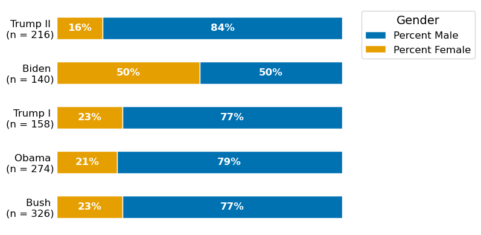

Among all presidents elected after 2000, Trump has nominated the fewest number of women. This pattern is particularly prominent during his second term, where he nominated 7% fewer women compared to his first term. His actions are contrasted with those of the Biden administration, which nominated record-breaking numbers of women to key positions in the executive branch.

Over 90% of Trump's nominees identify as white, a marked shift from his predecessor who appointed a more diverse group. The impacts of are even more alient because of the quantity. Not only is the percentage of white nominees higher under Trump, but the number of white people appointed during his first 300 days outnumber the total nominations made by Biden during his first 300 days.
The diagram below illustrates the outcome of each of Trump's political nominations during his second term. Unlike other visualizations on this page, this diagram draws from a larger sample of all political nominations - not just those made to the 15 cabinets in line for presidential succession.
Concerns over vacancies and high turnover have plagued the media. Controversial appointees, like Matt Gaetz and Chad Chronister have been withdrawn before making it to a Senate vote. Even confirmed positions have faced upsets, with Trump firing several high profile appointees - including Chairman of the Joint Chiefs of Staff Charles Brown, Federal Reserve Governor Lisa Cook, and Center for Disease Control Head Susan Monarez. This visualization highlights that these concerns are noteworthy, but that the majority of nominations have quietly advanced and are currently filled.
[Stuff about senate confirmations]